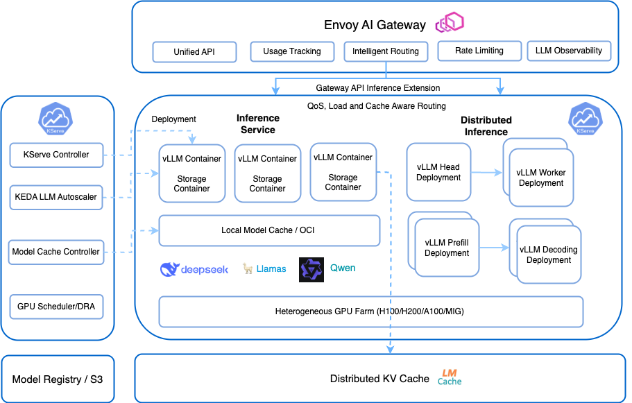

Announcing KServe v0.15: Advancing Generative AI Model Serving¶
Authors: Alexa Griffith, Dan Sun, Yuan Tang, Johnu George, Lize Cai
We are thrilled to announce the release of KServe v0.15, marking a significant leap forward in serving both predictive and generative AI models. This release introduces enhanced support for generative AI workloads, including advanced features for serving large language models (LLMs), improved model and KV caching mechanisms, and integration with Envoy AI Gateway.
¶
Embracing Generative AI Workloads¶
KServe v0.15 brings first-class support for generative AI workloads, marking a key evolution beyond traditional predictive AI. Unlike predictive models that infer outcomes from existing data, generative models like large language models (LLMs) create new content from prompts. This fundamental difference introduces new serving challenges. KServe now provides the infrastructure and optimizations needed to serve these models efficiently at scale.
To support these workloads, we've introduced a dedicated Generative AI section in our documentation, detailing the new capabilities and configurations tailored for generative models.
KServe now offers a lightweight installation for hosting LLMs on Kubernetes, please follow generative inference installation guide to get started. KEDA is an optional component for scaling based on LLM specific metrics and Envoy AI gateway is integrated for advanced traffic management capabilities with token rate limiting, unified API and intelligent routing.
Key Generative AI Features in v0.15¶
- Envoy AI Gateway Integration
- Multi Node Inference
- LLM Autoscaler with KEDA
- Distributed KV Cache with LMCache
Envoy AI Gateway Support¶
KServe v0.15 adds initial support for Envoy AI Gateway, a CNCF open source project built on top of Envoy Gateway and designed specifically for managing generative AI traffic at scale.
Envoy Gateway is also now supported in KServe along with Kubernetes Gateway API. Unlike traditional gateway solutions, Envoy AI Gateway provides advanced capabilities tailored to AI serving, including:
- Dynamic model routing based on request content, model metadata, or user context.
- Built-in support for multi-tenant inference, with fine-grained access controls and authentication.
- Unified API for routing and managing LLM/AI traffic easily.
- Integrated observability for model-level performance insights.
- Extensibility for inference-specific policies like rate-limiting by token, and model lifecycle management.
- Automatic failover mechanisms to ensure service reliability.
This integration enables a unified, intelligent entrypoint for both predictive and generative workloads—scaling from traditional models to complex LLMs—all while abstracting infrastructure complexity from the user. Please refer to Envoy AI Gateway integration doc for more details.
Multi-Node Inference¶
To support LLMs too large for a single node (e.g., Llama 3.1 405B), KServe v0.15 introduces multi-node inference across distributed GPUs, unlocking large model serving at scale. As models continue to increase in size, multi-node inference capabilities are increasingly important for production deployments that require real-time user experience. Please refer to the Multi Node inference doc for more details.
The community is also working on a new distributed inference API to allow scaling Multi Node Inference and support Disaggregatd Prefilling which is targeted for large LLM deployments.
apiVersion: serving.kserve.io/v1beta1
kind: InferenceService
metadata:
name: huggingface-llama3
spec:
predictor:
model:
modelFormat:
name: huggingface
storageUri: pvc://llama-3-8b-pvc/hf/8b_instruction_tuned
workerSpec:
pipelineParallelSize: 2
tensorParallelSize: 1
LLM Autoscaler with KEDA (Kubernetes Event-driven Autoscaling)¶
Autoscaling LLMs is challenging due to their high resource demands and variable inference traffic patterns. The dynamic nature of LLM inference, with varying input lengths and token generation speeds, further complicates the prediction of resource needs, demanding sophisticated and adaptive autoscaling solutions. KServe now integrates with KEDA (Kubernetes Event-Driven Autoscaling) offers a powerful solution to many of the challenges associated with LLM autoscaling by extending Kubernetes' native Horizontal Pod Autoscaler (HPA) capabilities. KEDA can monitor custom metrics which means you can expose LLM metrics from your LLM inference servers and use KEDA to scale based on these precise indicators.
This empowers users to efficiently manage LLM workloads with more intelligent scaling decisions based on workload characteristics for improved performance and cost optimization. Please follow the tutorial doc for how to autoscale based on vLLM metrics.
apiVersion: serving.kserve.io/v1beta1
kind: InferenceService
metadata:
name: huggingface-llama3-keda
annotations:
serving.kserve.io/autoscalerClass: "keda"
sidecar.opentelemetry.io/inject: "huggingface-llama3-keda"
spec:
predictor:
model:
modelFormat:
name: huggingface
args:
- --model_name=llama3
- --model_id=meta-llama/meta-llama-3-70b
minReplicas: 1
maxReplicas: 5
autoScaling:
metrics:
- type: PodMetric
podmetric:
metric:
backend: "opentelemetry"
metricNames:
- vllm:num_requests_running
query: "vllm:num_requests_running"
target:
type: Value
value: "4"
Distributed KV Cache with LMCache¶
Key-Value (KV) cache offloading is a technique used in large language model (LLM) serving to store and reuse the intermediate key and value tensors generated during model inference. In transformer-based models, these KV caches represent the context for each token processed, and reusing them allows the model to avoid redundant computations for repeated or similar prompts.
Enabling KV cache offloading across multiple requests and serving instances can achieve reduced Time To First Token(TTFT), improve scalability for shared cache across replicas, and improve user experience for multi-turn QA or RAG.
KServe integrates LMCache, the-state-of-art KV cache layer library developed by LMCache Lab to reduce inference costs and ensure SLOs for both latency and throughput at scale. Please follow the LMCache integration doc to optimize your GenAI inference workload.
apiVersion: serving.kserve.io/v1beta1
kind: InferenceService
metadata:
name: huggingface-llama3-lmcache
spec:
predictor:
minReplicas: 2
model:
modelFormat:
name: huggingface
args:
- --model_name=llama3
- --model_id=meta-llama/meta-llama-3-70b
- --kv-transfer-config
- '{"kv_connector":"LMCacheConnectorV1", "kv_role":"kv_both"}'
- --enable-chunked-prefill
Advanced Model Caching Mechanisms¶
To reduce model loading times and improve overall efficiency of serving large models, KServe v0.15 introduces advanced model caching features:
- LocalModelCache Enhancements: Improved the LocalModelCache custom resource to support multiple node groups, providing greater flexibility in model placement and caching strategies.
- Node Agent Improvements: Enhanced the local model node agent for better performance and reliability.
Enhanced vLLM Backend Support¶
The vLLM backend has been significantly upgraded to better serve generative AI models:
- Version Upgrade: Updated to vLLM 0.8.5, bringing performance improvements with v1 backend and new features.
- Qwen3 & Llama4: Added support for Qwen3 and Llama4 models.
- Reranking Support: Added support for reranking models.
- Embedding Support: Added support for OpenAI-compatible embeddings API, enabling a broader range of applications.
Additional Improvements¶
This release also includes several other enhancements:
- Support Deep Health Checks #3348
- Collocated Transformer & Predictor Feature #4255
- Kubernetes Gateway API support #3952
- Security Updates
For a complete list of changes and updates, please refer to the official release notes.
Join the Community¶
We invite you to explore the new features in KServe v0.15 and contribute to the ongoing development of the project:
- Visit KServe Website
- Explore KServe GitHub Repository
- Join the conversation on CNCF Slack #kserve
- Attend our community meetings by subscribing to the KServe calendar
We extend our gratitude to all the contributors who made this release possible. Your efforts continue to drive the advancement of KServe as a leading platform for serving machine learning models.
Happy serving!